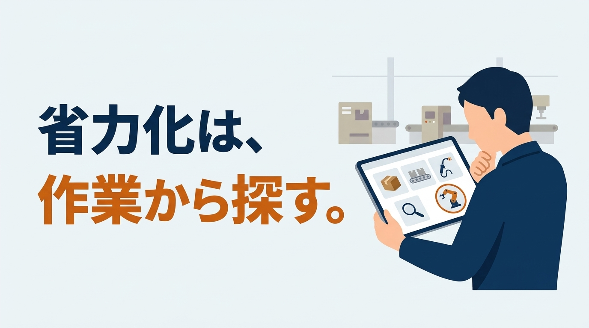
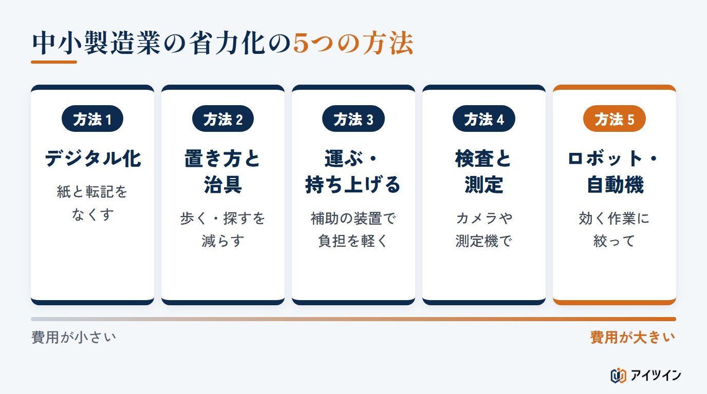
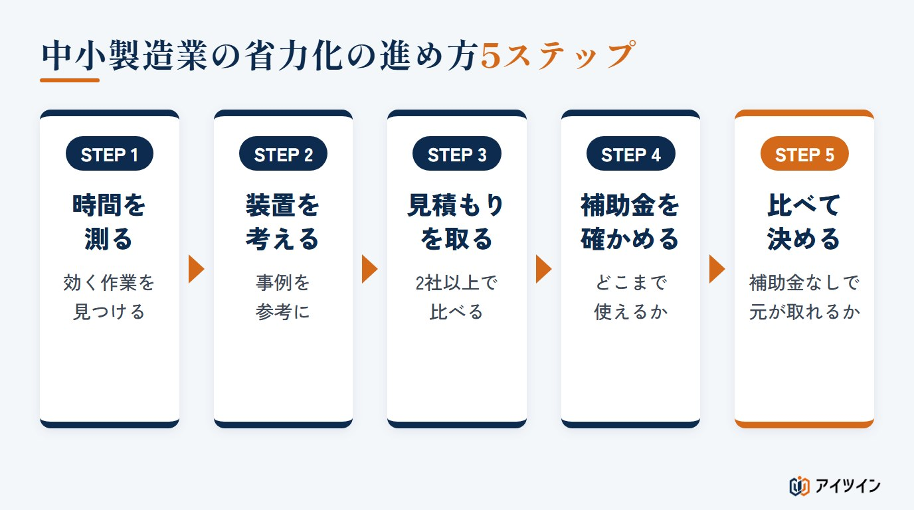
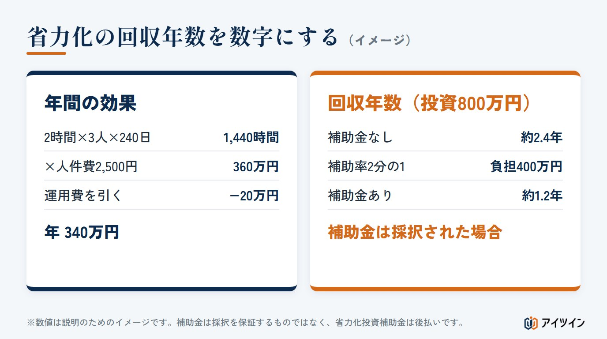

「人が足りないので省力化したいが、どんな装置にすればよいのか分からない」「事例を探しても、国の資料や補助金のサイトに情報が散らばっていて、自社の作業に近いものが見つからない」。中小の製造業で省力化を考え始めたとき、多くの方がこの段階で止まってしまいます。
本記事では、中小製造業の省力化について、必要な理由と5つの方法を整理したうえで、作業の名前から事例を探せる「事例ハブ」をご用意しました。あわせて、装置を考える、見積もりを頼む、補助金を確かめる、判断する、という進め方と、投資の回収の目安も解説します。
この記事でわかること
- 中小製造業で省力化が必要な理由と、省力化の5つの方法
- 作業の名前から探せる省力化の事例（18の作業）と、補助金の当てはまり
- 装置の検討から見積もり・補助金・判断までの進め方と、回収年数の計算（計算ツールつき）
中小製造業で省力化が必要な3つの理由
理由1：人が集まりにくく、今いる人に負担が寄っている
働く世代が減るなか、中小の製造業では、募集をかけても人が集まりにくくなっています。足りない分は、今いる人の残業や掛け持ちで補われがちで、負担が重なると、さらに人が辞めるという悪い流れが生まれます。人を増やすのが難しい以上、今いる人で回せるように、作業そのものを軽くすることが欠かせません。
理由2：賃金を上げながら、利益を確保する必要がある
人を確保するために賃金を上げる動きが広がるなか、同じやり方のままでは、利益が圧迫されます。1人がこなせる仕事の量を増やす省力化は、賃金を上げながら会社を続けていくための手段でもあります。国も、中小企業の省力化への投資を、中小企業省力化投資補助金などで後押ししています。ただし、対象になる会社や設備、補助率には要件があり、審査を経て交付が決まります。
理由3：ベテランの技を、仕組みに置き換える必要がある
長年の経験で回っている工程は、その人が辞めると止まってしまいます。熟練の手作業を装置や治具に置き換えたり、経験を数字の基準にしたりすることは、技術を引き継ぐことにもつながります。
この章のまとめ
- 人が集まりにくく、今いる人に負担が寄っている
- 賃金を上げながら利益を確保するために、1人がこなせる量を増やす
- ベテランの技を、装置や数字の基準に置き換える
省力化と省人化の違い｜中小製造業はまず「負担を減らす」から
省力化は、作業の時間や体の負担を減らすことです。省人化は、その結果として、必要な人数を減らすことです。中小の製造業では、いきなり人を減らすことを目標にするより、まず省力化で作業を軽くし、その結果として人数が減るという順番のほうが、現場の納得も得やすく、失敗も少なくなります。考え方の詳しい説明は「省人化ではなく省力化を。製造現場の負担を軽くする第一歩とは」で、組み立てラインでの具体的な進め方は「組み立てラインの省人化の進め方」で紹介しています。
この章のまとめ
- 省力化は負担を減らすこと、省人化は人数を減らすこと
- 省力化で作業を軽くした結果として、人数が減る順番がよい
- いきなり人を減らす目標は、現場の反発や失敗を招きやすい
中小製造業の省力化の5つの方法
省力化というとロボットを思い浮かべがちですが、方法はほかにもあります。お金のかからないものから順に、5つに分けて整理します。

方法1：紙と転記をなくす（デジタル化）
手書きの日報や伝票の転記、見積もりの計算など、事務の作業も省力化の大きな対象です。表計算や簡単なシステムで、同じ数字を何度も書き写す作業をなくします。
方法2：置き方と治具を工夫する
部品を手の届く位置に置く、取り出しやすい向きに並べる、位置を決める治具をつくる、といった工夫です。費用は小さいのに、歩く・探す・持ち替える時間が減り、効果が出やすい方法です。
方法3：運ぶ・持ち上げるを補助する
台車やコンベヤ、無人搬送車で運ぶ作業を減らし、重さを打ち消す補助装置で持ち上げる負担を軽くします。体への負担が大きい作業ほど、効果を実感しやすくなります。
方法4：検査と測定を自動にする
目で見る検査をカメラと画像処理に、手で測る寸法を自動の測定機に置き換えます。人による見落としのばらつきも減らせます。
方法5：ロボットや自動機を入れる
くり返しの多い作業や、重い・危ない作業をロボットや専用の自動機に任せます。効果は大きい反面、費用も大きくなるため、ほかの方法で減らしたうえで、効果の大きい作業に絞って入れるのが基本です。
この章のまとめ
- 省力化の方法は、デジタル化・置き方と治具・運ぶ補助・検査の自動化・ロボットの5つ
- 置き方や治具の工夫は、費用が小さく効果が出やすい
- ロボットや自動機は、効果の大きい作業に絞って入れる
作業から探す｜中小製造業の省力化の事例
省力化を考えるときは、まず「この作業を、どんな装置や仕組みにできるか」のイメージをつかむことが大切です。ここでは、製造業でよくある18の作業について、よく使われる装置や仕組み、国・公的機関・業界団体が公開している事例、補助金のカタログに当てはまる製品の分類をまとめました。作業の名前を入れるか、ボタンを押すと絞り込めます。
まずはここから｜中小製造業で効果が出やすい省力化3選
18の作業のうち、どこから手をつけるか迷ったときは、費用が小さく、効果を実感しやすい次の3つから考えるのがおすすめです。
- 記録・帳票・見積もり（事務）：手書きの日報や伝票の転記をなくす。表計算や簡単な仕組みで始められ、毎日の時間がそのまま減ります。
- 材料の出し入れ・組立の置き方と治具：部品の置き場所や向き、位置を決める治具を工夫する。費用は小さいのに、歩く・探す・持ち替える時間が減ります。
- 重い物の持ち上げ・工程間の搬送：台車や補助装置で、運ぶ・持ち上げる負担を軽くする。体への負担が大きい作業ほど、効果を実感しやすくなります。
下の事例ハブで、それぞれの作業を選ぶと、よく使われる装置や公開されている事例を確かめられます。
機械への材料の出し入れ
工作機械や成形機への投入と取り出し
工作機械や成形機に材料をセットし、加工が終わったら取り出す作業です。ロボットや自動ワーク交換装置にすると、人が機械の前に張り付かずに済み、1人で複数の機械を見たり、夜間に無人で動かしたりしやすくなります。
- 事例日本ロボット工業会「ロボット活用ナビ」「機械加工：ロード・アンロード」の導入事例
- 事例東北経済産業局「中小製造業における省力化事例集」（1人で複数の設備を見る体制・PDFの9ページ目）
- 補助金カタログ注文型の製品カテゴリに「ローダ付きNC旋盤」「工作機械用自動ワーク交換装置」「後工程自動化機能付成形品取出しロボット」など（製品カタログ）
工程間の搬送
台車やフォークリフトでの運搬
台車を押す、フォークリフトで運ぶといった工程の間の運搬を、無人搬送車やコンベヤに置き換えます。運搬は付加価値を生まないのに、歩く時間が積み重なりやすい作業です。通路や段差の条件で、選べる装置が変わります。
- 事例経済産業省「省力化投資促進プラン（中小製造業）」（金属プレス部品の運搬を無人搬送車にして2人を1人に・PDFの12ページ目）
- 事例経済産業省「省力化投資促進プラン（中小製造業）」（鋳造の中子の搬送と設置をロボットに・PDFの11ページ目）
- 事例中小企業省力化投資補助金「カタログ注文型 活用事例集」（倉庫間の部品の移動をフォークリフトから無人搬送車に・PDFの7ページ目）
- 事例日本ロボット工業会「ロボット活用ナビ」「マテリアルハンドリング」の導入事例
- 補助金カタログ注文型の製品カテゴリに「無人搬送車（AGV・AMR）」「垂直搬送機（貨物専用）」「無人フォークリフト（AGF）」など（製品カタログ）
- 関連搬送作業の省人化の費用の内訳
重い物の持ち上げ・反転
腰に負担のかかる作業を軽くする
重い部品や製品を持ち上げる、裏返すといった作業を、重さを打ち消す補助装置（バランサ）や反転機で軽くします。人の作業は残りますが、体の負担とケガの危険が減り、慣れていない人でもこなせるようになります。
- 事例中小機構「補助金活用ナビ」の活用事例（約70kgの鋼板を吸着して上げ下げする曲げ機で4人を2人に）
- 事例中小企業省力化投資補助金「カタログ注文型 活用事例集」（印刷用紙の積み替えの体の負担を装置で軽く・PDFの6ページ目）
- 補助金カタログ注文型の製品カテゴリに「バランサ装置」「金型・大型部材用反転機」など（製品カタログ）
- 関連パレットの反転作業を自動化した例（組み立てラインの省人化）
箱詰め・包装
並べて詰める、箱を組む・閉じる
製品を並べて箱に詰める、箱を組み立てる・閉じるといった作業です。箱を組む・閉じる装置から始め、詰める作業をロボットにする例もあります。品種や箱の種類が多いほど、装置の切り替えが複雑になり、費用が上がります。
パレットへの積み付け
箱や袋を段積みする出荷作業
箱や袋をパレットに積み上げる作業は、重く、同じ動きのくり返しが多いため、ロボットの効果が出やすい作業です。積み方の種類が多い場合は、切り替えのしやすさも確かめます。
- 事例日本ロボット工業会「ロボット活用ナビ」「入出荷」の導入事例
- 補助金カタログ注文型の製品カテゴリに「パレタイズロボット」など（製品カタログ）
組立・ねじ締め・圧入
組み付ける、締める、押し込む
ねじ締めの機械、押し込むための簡単なプレス、位置を決める治具などで半自動にする例が多くあります。柔らかい部品や品種の多い組み付けは、人に残すほうが現実的な場合もあります。
- 事例日本ロボット工業会「ロボット活用ナビ」「一般組立」の導入事例
- 補助金カタログ注文型の製品カテゴリに「精密板金向け自動タッピングマシン」「クリンチングファスナー圧入機」など（製品カタログ）
- 関連組み立てラインの省人化の進め方
外観検査・測定
目で見る検査、手で測る寸法
目で見る検査をカメラと画像処理に、手で測る寸法を自動の測定機に置き換えます。装置を選ぶ前に、何を不良とするかの基準と、良品・不良品の見本をそろえておくことが大切です。
- 事例中小企業省力化投資補助金「一般型 活用事例集」（三次元測定機で1回の検査を80分から15分に・PDFの2ページ目）
- 事例中小企業庁「中小企業白書2024」（ゴム部品の全数検査に自動検査装置）
- 事例群馬県IoT・AI推進研究会「成果事例集」（鋳物の検査をカメラとロボットとAIで行い、合否で仕分け・PDFの5ページ目）
- 事例群馬県IoT・AI推進研究会「成果事例集」（見分けにくい透明な樹脂製品の外観検査・PDFの6ページ目）
- 事例群馬県IoT・AI推進研究会「成果事例集」（自動車シートのしわの検査をカメラとAIで・PDFの3ページ目）
- 事例群馬県IoT・AI推進研究会「成果事例集」（食品の異物の検査をAIで・PDFの11ページ目）
- 事例東北経済産業局「中小製造業における省力化事例集」（点灯の検査の自動化・PDFの5ページ目）
- 事例日本ロボット工業会「ロボット活用ナビ」「測定・検査・試験」の導入事例
- 補助金カタログ注文型の製品カテゴリに「AI外観検査用画像処理システム」「自動画像測定機」「CNC三次元測定機」「検品・仕分システム」など（製品カタログ）
溶接
アーク・スポット・TIG・レーザー
溶接ロボットや協働ロボット、レーザー溶接機などで自動化します。少量多品種の場合は、溶接そのものの時間だけでなく、段取りやプログラムづくりの手間も含めて効果を考えます。
- 事例中小企業庁「中小企業白書2026」（板金の曲げと溶接にロボット・PDFの240ページ目）
- 事例群馬県IoT・AI推進研究会「成果事例集」（溶接の出来をAIで検査し、検査の人を不要に・PDFの4ページ目）
- 事例東北経済産業局「中小製造業における省力化事例集」（プレス品の溶接にロボット・PDFの4ページ目）
- 事例東北経済産業局「中小製造業における省力化事例集」（少量多品種の板金の溶接・PDFの10ページ目）
- 事例日本ロボット工業会「ロボット活用ナビ」「アーク溶接」の導入事例
- 事例日本ロボット工業会「ロボット活用ナビ」「スポット溶接」の導入事例
- 補助金カタログ注文型の製品カテゴリに「精密板金向けTIG溶接協働ロボットシステム」「テーブル式スポット溶接機」「ファイバーレーザー溶接機」など（製品カタログ）
- 関連溶接の強度計算の方法と例
バリ取り・研磨
削り残しの除去と仕上げ
重い物を持ちながらのバリ取りや、粉じんの中での研磨は、専用の装置やロボットにする効果が大きい作業です。細かな仕上げなど、人の手に残る工程を見極めることも大切です。
- 事例東北経済産業局「中小製造業における省力化事例集」（鉄鍋のバリ取りにロボット・PDFの3ページ目）
- 事例日本ロボット工業会「ロボット活用ナビ」「機械加工：研磨・バリ取り」の導入事例
- 補助金カタログ注文型の製品カテゴリに「鍛圧・板金加工用バリ取り装置」「鋳物用自動バリ取り装置」など（製品カタログ）
塗装
吹き付け、コーティング
吹き付け塗装などをロボットにすると、塗りむらが減って品質が安定し、溶剤のある環境から人を離せます。塗る物の形や色替えの頻度で、装置の選び方が変わります。
- 事例東北経済産業局「中小製造業における省力化事例集」（鉄急須の内面の琺瑯引きにロボット・PDFの3ページ目）
- 事例日本ロボット工業会「ロボット活用ナビ」「塗装」の導入事例
- 補助金製造業向けのカタログ注文型の製品カテゴリは見当たらず、一般型など個別の申請が中心（製品カタログ）
板金・プレス（曲げ・抜き・切断）
曲げ、プレス、材料の出し入れ
曲げ加工のロボット、材料の自動搬入・搬出、金型の自動交換などで自動化します。少量多品種でも、段取り替えまで自動でできる設備が出てきています。
- 事例中小企業庁「中小企業白書2026」（材料の供給から仕分けまでを一体にして24時間の無人運転・PDFの240ページ目）
- 事例中小企業庁「中小企業白書2025」（板金の抜きから曲げへ、上流の工程から順に自動化）
- 事例中小機構「補助金活用ナビ」の活用事例（大きな鋼板の曲げを4人から2人に、加工時間を約7割削減）
- 事例東北経済産業局「中小製造業における省力化事例集」（少量多品種の板金の自動化・PDFの10ページ目）
- 事例日本ロボット工業会「ロボット活用ナビ」「プレス」の導入事例
- 事例日本ロボット工業会「ロボット活用ナビ」「機械加工：切断」の導入事例
- 補助金カタログ注文型の製品カテゴリに「プレスブレーキ用ロボットシステム」「板金機械用材料シート自動搬入・搬出装置」「プレスブレーキ用金型自動交換装置」など（製品カタログ）
裁断・縫製（布・革・畳）
型紙どおりに切る、縫う
布や革を型紙どおりに切る、縫い合わせるといった作業を、自動の裁断機や、型紙をデータで扱うCAD、縫う作業のロボットで減らします。型紙をデータにすると、保管や変更の手間も減ります。裁断で空いた人を縫製に回して、増産につなげた例もあります。
- 事例中小企業省力化投資補助金「一般型 活用事例集」（家具の革の裁断を自動にして1枚60分を15分に・PDFの4ページ目）
- 事例中小企業省力化投資補助金「一般型 活用事例集」（畳の裁断と縫いを協働ロボットに・PDFの3ページ目）
- 事例経済産業省「省力化投資促進プラン（中小製造業）」（型紙の作成を3次元のCADで自動化・PDFの11ページ目）
- 補助金カタログ注文型の製品カテゴリに「自動裁断機」「自動延反機」「コンピュータ横編み機」など（製品カタログ）
食品の加工・充填
下処理、切る、詰める、計る
魚のうろこ取りや切り身、材料を計って混ぜる、袋や容器に詰めるといった食品の加工の作業を、専用の加工機や充填機に置き換えます。衛生の決まりや、洗いやすさも装置選びの大事な条件です。熟練者しかできなかった作業を機械に任せ、教育の時間を生み出した例もあります。
- 事例中小機構「補助金活用ナビ」の活用事例（魚のうろこ取りを6人で300分から12分に）
- 事例中小機構「補助金活用ナビ」の活用事例（充填包装と搬入・検査の自動化で生産能力1.3倍）
- 事例中小企業省力化投資補助金「一般型 活用事例集」（麺の製造ラインで1日の作業を200分削減・PDFの6ページ目）
- 補助金カタログ注文型の製品カテゴリに「食品スライサ・カッタ」「食品切断・分離・除去機」「食品包覆機」「飲食料品充填・吐出機」「食料品加熱撹拌機」など（製品カタログ）
洗浄
加工後の部品や金型を洗う
加工後の部品の油や切りくずを落とす、金型や部品を洗うといった作業を、洗浄装置にまとめます。洗う時間の短縮だけでなく、仕上がりがそろう効果もあります。
- 事例日本ロボット工業会「ロボット活用ナビ」「洗浄」の導入事例
- 補助金カタログ注文型の製品カテゴリに「金属加工製品用洗浄装置」「プラスチック成形機部品洗浄装置（洗浄液式）」「切削屑連続遠心脱油機」など（製品カタログ）
在庫・倉庫・ピッキング・ラベル
探す、取り出す、表示する
物を探す、取り出す、数える、ラベルを貼るといった作業を、自動倉庫や、取り出す場所をランプで知らせる仕組み、自動のラベル貼り機などで減らします。どこに何があるかを記録するだけでも、探す時間は減ります。
- 事例経済産業省「省力化投資促進プラン（中小製造業）」（鋳物の出荷を自動倉庫とロボットにして14人を4人に・PDFの11ページ目）
- 事例中小機構「省力化ナビ」の製造業の事例（金型を探す仕組みで棚卸しを効率化・PDF）
- 補助金カタログ注文型の製品カテゴリに「自動倉庫」「ラックシステム」「デジタルピッキングシステム」「オートラベラー」など（製品カタログ）
段取り替え
品種の切り替え、金型や工具の交換
金型や工具の交換、設定の変更など、品種を切り替えるための作業です。自動交換の装置のほか、工具の長さを機械の外で測っておく、治具を共通にするといった工夫でも短くできます。
- 事例中小企業庁「中小企業白書2026」（段取り替えの時間を約20％削減・PDFの240ページ目）
- 事例群馬県IoT・AI推進研究会「成果事例集」（機械の停止の半分を占めた加工データの手直しを自動化・PDFの7ページ目）
- 事例東北経済産業局「中小製造業における省力化事例集」（段取り替えまで自動化した板金・PDFの10ページ目）
- 補助金カタログ注文型の製品カテゴリに「プレスブレーキ用金型自動交換装置」「ツールプリセッター」「パレットチェンジャー付3軸マシニングセンタ」など（製品カタログ）
記録・帳票・見積もり（事務）
日報、伝票、見積もり、生産管理
手書きの伝票や日報の転記、見積もりの計算、生産の計画づくりなどを、システムや自動化の道具で減らします。現場の作業だけでなく、事務の作業も省力化の大きな対象です。
- 事例中小企業庁「中小企業白書2026」（紙の帳票をなくして月約530時間を削減・PDFの241ページ目）
- 事例中小企業庁「中小企業白書2026」（データを一元管理して生産の指示を自動で出す・PDFの242ページ目）
- 事例経済産業省「省力化投資促進プラン（中小製造業）」（縫製の仕様書をタブレットでペーパーレスに・PDFの11ページ目）
- 事例中部経済産業局「兆しレポート：省力化投資と現場社員のリスキリング」（帳票の電子化とIoT・RPAで入力を年8,100時間以上削減・PDFの28ページ目）
- 事例中小機構「補助金活用ナビ」の活用事例（熱処理・塗装の作業情報をデジタル化）
- 事例中部経済産業局「兆しレポート：省力化投資と現場社員のリスキリング」（ロボットと日報の電子化などで労働生産性が倍に・PDFの25ページ目）
- 事例東北経済産業局「中小製造業における省力化事例集」（手書き伝票と書類の電子化・PDFの6ページ目）
- 事例東北経済産業局「中小製造業における省力化事例集」（受注・見積もり・生産管理・PDFの7ページ目）
- 事例東北経済産業局「中小製造業における省力化事例集」（紙の書類の読み取りと事務の自動化・PDFの8ページ目）
- 事例中小機構「省力化ナビ」の製造業の事例（見積もりの計算の仕組みづくり・PDF）
- 事例中小機構「省力化ナビ」の製造業の事例（生産管理の効率化・PDF）
- 事例中小機構「省力化ナビ」の製造業の事例（動画などによる教育・PDF）
- 関連製造業のシステム連携とは
稼働の見える化・夜間の無人運転
設備の状態を知る、人のいない時間に動かす
設備が動いているか、止まっているかを自動で記録し、離れた場所からも確かめられるようにします。止まっている時間や理由が分かると、どこを省力化すべきかも見えてきます。夜間の無人運転にもつながります。
- 事例経済産業省「省力化投資促進プラン（中小製造業）」（樹脂成形のラインの稼働率を見える化し55％から93％に・PDFの10ページ目）
- 事例中小企業庁「中小企業白書2026」（設備の稼働率と不良率をリアルタイムで確認・PDFの242ページ目）
- 事例中部経済産業局「兆しレポート：省力化投資と現場社員のリスキリング」（稼働率と止まった理由を見える化し、1人あたりの生産性が30％以上アップ・PDFの28ページ目）
- 事例群馬県IoT・AI推進研究会「成果事例集」（成形機の進み具合をIoTで集めてリアルタイムに表示・PDFの9ページ目）
- 事例群馬県IoT・AI推進研究会「成果事例集」（熟練者の成形機の調整を数値にして、誰でも調整できるように・PDFの8ページ目）
- 事例東北経済産業局「中小製造業における省力化事例集」（24時間無人で動かす工場を遠隔で監視・PDFの8ページ目）
- 事例東北経済産業局「中小製造業における省力化事例集」（機械の稼働状況の管理・PDFの9ページ目）
- 関連配線をいじらず古い設備からデータを取る方法
- 関連設備の故障を減らす保全の進め方
当てはまる作業が見つかりませんでした。作業の名前を変えて探すか、そのままご相談ください。
事例は、国・公的機関・自治体の研究会・業界団体が公開しているものです（群馬県の研究会の事例集は、国の機関であるIPAのサイトに掲載されています）。補助金の製品カテゴリは、中小企業省力化投資補助金のカタログ注文型の製品カテゴリの資料（2026年10月8日更新）で確かめたもので、カテゴリや登録された製品は変わることがあります。申請の前に、必ず最新の公式の情報を確かめてください。
この章のまとめ
- まず、自社の作業に近い事例で、装置や仕組みのイメージをつかむ
- 事例は国・公的機関・業界団体の公開情報から探せる
- 補助金のカタログに当てはまる製品の分類があるかも、早めに確かめる
中小製造業の省力化の進め方5ステップ
省力化は、次の5つのステップで進めるのが一般的です。事例でイメージをつかみ、見積もりと補助金を見比べて、最後は金額と効果のバランスで決めます。

STEP1：作業を書き出し、時間を測る
どの作業に、誰が、1日に何時間かけているかを書き出します。体に負担がかかる作業や、ミスが起きやすい作業にも印を付けます。時間を測ると、省力化で効果が出る作業がはっきりします。
STEP2：装置や仕組みのイメージを決める
前の章の事例を参考に、「この作業を、こんな装置や仕組みに変えたい」というイメージをつくります。全部を機械にする必要はなく、人に残す部分を決めることも大切です。
STEP3：商社や施工業者に見積もりを頼む
付き合いのある商社や設備の施工業者に、イメージを伝えて見積もりを頼みます。物の大きさや重さ、数、品種、今の人数と時間を伝えると、見積もりの精度が上がります。可能なら、2社以上から取って比べます。
STEP4：補助金がどこまで使えるかを確かめる
見積もりを見ながら、補助金の当てはまりを確かめます。中小企業省力化投資補助金の申請の型は、大きく2つです。カタログに載った製品から選ぶ型と、自社に合わせた設備を個別に申請する型です。カタログ注文型は販売事業者と一緒に申請し、一般型は自社で事業計画をつくって審査を受けます。どちらに当てはまるか、対象になる費用はどこまでかを、公式の情報や支援機関で確かめます。交付が決まる前に発注や契約をすると、対象にならないので注意します（詳しくは「中小企業省力化投資補助金、自社の工場は何が対象になる？」）。
STEP5：金額と効果のバランスで決める
装置の中身、金額、補助金、減る時間を並べて、投資に踏み切るかを決めます。補助金が使えるから買うのではなく、補助金がなくても元が取れるかを先に確かめると、判断を誤りにくくなります。回収の目安は、次の章の計算ツールで試せます。
この章のまとめ
- 作業と時間を測り、事例で装置や仕組みのイメージを決める
- 見積もりを取り、補助金がどこまで使えるかを確かめる
- 補助金がなくても元が取れるかを先に確かめ、金額と効果で決める
中小製造業の省力化の費用と効果｜補助金を使った場合の回収の目安
省力化の効果は、減る作業時間を金額にして考えます。数字は説明のための例です。
減る時間を、金額にする
ここで計算するのは、会社が自分で投資を判断するための簡易な目安です。ある作業の省力化で、3人の作業がそれぞれ1日2時間減り、年に240日働くとします。1時間あたりの人件費を2,500円、装置の保守などの運用費を年20万円とします。
年間に減る時間 ＝ 2時間 × 3人 × 240日 ＝ 1,440時間
人件費の減少 ＝ 1,440時間 × 2,500円 ＝ 360万円
年間の効果 ＝ 360万円 − 運用費20万円 ＝ 340万円
補助金なしと、ありで回収年数を比べる
装置の投資額（設計・据え付け・調整・教育を含む）が800万円で、補助率が2分の1の補助金が使えた場合を比べます。補助率は制度や型、会社の規模で違い、たとえば中小企業省力化投資補助金では、カタログ注文型は2分の1以下、一般型は中小企業で2分の1（小規模企業者などは3分の2）です。公募の回ごとに変わることがあるため、申請するときの公募要領で確かめます。
補助金なし：800万円 ÷ 340万円 ＝ 約2.4年
補助金あり：（800万円 − 400万円）÷ 340万円 ＝ 約1.2年

補助金があると回収は早くなりますが、採択されるとは限りません。中小企業省力化投資補助金は、交付が決まってから設備を買って支払い、実績を報告したあとに補助額が確定して支払われる後払い（精算払い）です。受け取る額が、交付が決まった額の全額になるとも限りません。そのため、設備の代金は自己資金や融資で先に用意しておく必要があります。また、減った時間で人がほかの仕事に移るだけなら、人件費は減りません。その場合は、残業や外注、採用が減る、増産できる、といった別の効果で考えます。国の事例集を見ても、省力化で空いた時間を、試作や品質管理、若手の育成、営業や新しい商品の開発に回した例が多くあります。省力化のあと、人に何をしてもらうかまで決めておくと、効果は大きくなります。
なお、補助金を申請するときに求められる「投資回収期間」は、公募要領の決まった式で計算します（補助金を差し引かず、減る工数と、増える付加価値で計算するなど）。ここでの自社の判断のための計算とは、分けて考えてください。
自分の条件で試す｜省力化の回収年数の計算ツール
初期値は、上の例の条件です。補助率を0％にすると、補助金なしの場合と同じになります。
省力化の効果と、補助金を使った場合の回収年数
年間の効果は「1日に減らせる時間 × 人数 × 年間の稼働日数 × 1時間あたりの人件費 − 年間の運用費」、回収年数は「実際の負担額 ÷ 年間の効果」で概算します。補助率は、制度や型、会社の規模によって違います。補助金は採択されるとは限らず、中小企業省力化投資補助金は設備を買って支払ったあとに受け取る後払い（精算払い）です。いったんは全額を用意する必要があり、受け取る額が交付決定の額の全額になるとも限りません。補助金の申請で求められる投資回収期間は、公募要領の式で別に計算します。減った時間で人件費が減らない場合（ほかの仕事に移るだけの場合）は、その分は効果になりません。残業や外注、採用の削減、増産による効果があれば、その分を足して考えてください。結果は目安で、投資の判断や補助金の採択を保証するものではありません。
結果
| 年間に減る作業時間 | 時間 |
|---|---|
| 年間の効果（人件費 − 運用費） | 万円 |
| 実際の負担額（投資額 − 補助金） | 万円 |
| 回収年数（補助金なし → あり） |
この章のまとめ
- 省力化の効果は、減る時間に人件費を掛け、運用費を引いて考える
- 補助金で回収は早くなるが、採択は保証されず、省力化投資補助金は後払い
- 人件費が減らない場合は、残業や外注の削減、増産で効果を考える
中小製造業の省力化でよくある3つの失敗
失敗1：装置を入れることが目的になる
「ロボットを入れたい」から始めると、効果の小さい作業に大きな投資をしてしまうことがあります。中部経済産業局の調査でも、何をさせたいかを十分に決めないままロボットを入れ、期待ほどの効果が出なかった例が紹介されています（兆しレポート）。その会社は、失敗を社内で振り返り、社員を育てたうえでロボットを入れ直して、効果を上げています。まず作業の時間を測り、どこを減らすと効くかを確かめてから、装置を選びます。
失敗2：補助金ありきで選ぶ
補助金の対象になる装置から選ぶと、自社の作業に合わない装置を入れてしまうことがあります。先に作業に合う装置を考え、そのあとで補助金の当てはまりを確かめる順番が大切です。
失敗3：入れたあとの運用と保全を考えていない
装置が止まったときに直せる人がいない、品種が増えて使えなくなった、という例は少なくありません。止まったときの戻し方、点検のしやすさ、品種が増えたときの使い方まで、入れる前に考えておきます（「設備の故障を減らす保全の進め方」）。
この章のまとめ
- 装置ではなく、作業の時間を減らすことを目的にする
- 先に作業に合う装置を考え、補助金はそのあとで確かめる
- 止まったときや品種が増えたときの運用まで、入れる前に考える
アイツインの中小製造業の省力化の支援
アイツインは、搬送装置の機械設計と保全の経験をもとに、中小製造業の省力化を「作る前に試す」進め方で支援しています。
作業時間を測り、どこを省力化すべきかを数字にする
現場にうかがい、作業の流れと時間を測って、どの作業に時間と負担が集中しているかを数字で整理します。「どこから手をつければよいか分からない」という段階からご相談いただけます。
装置のイメージを、作る前に画面で確かめる
装置や仕組みのイメージを、現場をデジタル上で再現して確かめます。見積もりを頼む前に、置き場所や動き、人数の変化を確かめられるので、商社や施工業者への依頼もしやすくなります。
設計・強度計算と、止まりにくい装置づくり
装置をのせる架台の強度計算や図面の作成、保全の目線での止まりにくく直しやすい設計もお受けしています。本格的に進める場合も、3か月単位で成果を確かめながら続けるかどうかをご判断いただけます。
まずは現場の作業の整理から、お気軽にご相談ください
「どの作業から省力化すればよいか分からない」「見積もりを頼む前に、効果を確かめたい」という段階からご相談いただけます。ご相談とお見積もりは無料です。
まとめ
本記事では、中小製造業の省力化について、必要な理由、5つの方法、作業から探せる事例、進め方、回収の目安、よくある失敗を解説しました。
省力化は、装置を買うことではなく、作業の時間と負担を減らすことです。自社の作業に近い事例でイメージをつかみ、見積もりと補助金を見比べ、補助金がなくても元が取れるかで判断する。中小製造業の省力化は、事例を探して、測って、比べて決めることで、失敗しにくくなります。まずは、上の事例ハブで、自社の作業に近い事例を探してみてください。
参考
・中小企業庁「2026年版 中小企業白書」
・中小企業省力化投資補助金「一般型 活用事例集」「カタログ注文型 活用事例集」（広報ツール）
・経済産業省「省力化投資促進プラン ―中小製造業―」（2025年6月）
・東北経済産業局「中小製造業における省力化事例集」（2025年6月）
・中部経済産業局「兆しレポート：省力化投資の効果を高める現場社員のリスキリングの兆し」（2025年4月）
・群馬県IoT・AI推進研究会「成果事例集」（2022年3月・IPA 地域DX推進ラボのサイトに掲載）
・独立行政法人中小企業基盤整備機構「省力化ナビ」
・独立行政法人中小企業基盤整備機構「補助金活用ナビ」補助金の活用事例
・中小企業省力化投資補助事業 製品カタログ（製品カテゴリ）
・一般社団法人日本ロボット工業会「ロボット活用ナビ」産業用ロボット事例紹介
・本記事の計算の数字は、説明のための例です。補助金の採択や投資の効果を保証するものではありません。